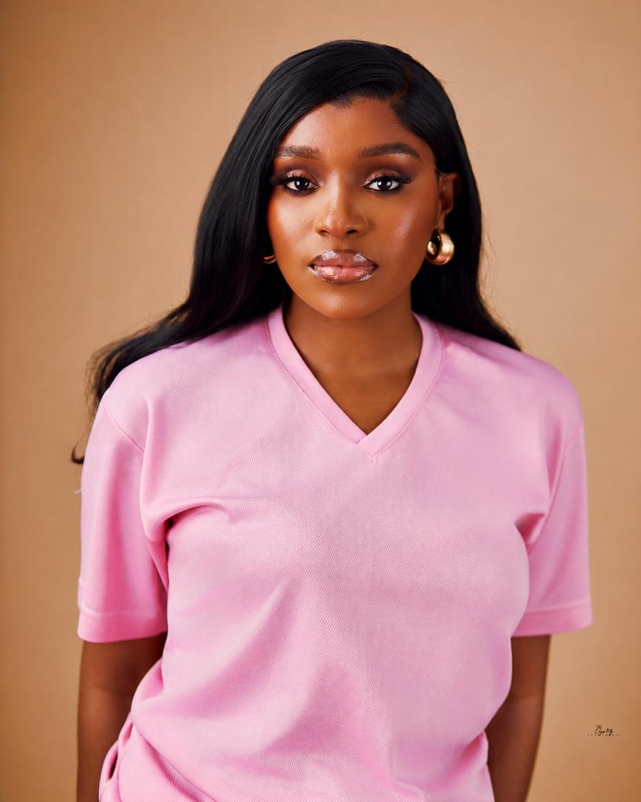

I create digital solutions by combining creativity, technology and strategic thinking.
FRONTEND DEVELOPER PORTFOLIO
Hi, I am Mamah Oluchukwu — A frontend developer combining creativity, problem-solving and technology to build meaningful web experiences.
Download ResumeDesign Thinking ✦ Code ✦ Creativity

I am a frontend developer passionate about building simple, functional and user-friendly digital experiences. My approach combines creativity, problem solving, continuous learning and the effective use of AI tools.
These are projects I completed during my frontend development journey. Each project helped me improve my design thinking, problem solving and coding skills.
Problem: Busy professionals, students and families needed a simple way to access freshly prepared Nigerian meals online.
Design Process: I planned the user experience, created a Nigerian food-inspired brand identity, selected colors and structured meal categories for easy navigation.
Development: Built the website using HTML and CSS. I created the navigation, hero section, food categories, product cards and layout structure.
Engineering Improvements: I debugged stylesheet linking issues, corrected file paths, improved spacing and refined the user interface.
Problem: Parents need an easy online shopping experience for discovering and purchasing children's products.
Design Process: Created a colorful and user-friendly shopping interface focused on product visibility and simple navigation.
Development: Developed the frontend structure with HTML and CSS, including product sections, navigation and reusable components.
Current Improvement: Improving responsiveness, layout structure and overall user experience.
Problem: My first portfolio needed stronger presentation, project documentation and a more professional developer identity.
Design Process: Reviewed my first design, kept strong branding elements and redesigned the structure for better communication.
Development: Refactored HTML and CSS, added project showcases, improved layouts, integrated my resume and documented my AI-assisted workflow.
Delivery: Created an improved portfolio demonstrating growth, frontend skills and engineering decisions.
This project was developed using AI-assisted development. I used multiple prompts, reviewed the generated solutions, and improved the code through testing, debugging and customization.
Prompt Used: "Using vibe engineering, help me build a professional portfolio website that showcases my projects, resume and growth as a frontend developer."
Engineering Work: I analyzed the suggested structure, selected a multi-section approach, organized content flow and customized the website according to assignment goals.
"Review my portfolio design. Help me make it professional while keeping creativity, luxury and my personal identity."
Engineering Work: I experimented with typography, color combinations, image placement and layout choices to balance creativity with professionalism.
Prompt Used: "My images are not displaying correctly and my layout is breaking. Help me debug my HTML and CSS."
Engineering Work: I inspected file paths, corrected folder structures, adjusted CSS properties and improved responsiveness.
Prompt Used: "How can I improve my existing portfolio instead of starting over?"
Engineering Work: I transformed my original portfolio into an improved version by keeping strong design elements, restructuring content and adding project documentation.
I am open to opportunities, collaborations and projects that combine creativity, technology and problem solving.
Email: theoluchukwu@gmail.com
GitHub: https://github.com/billionaireoluchukwu
LinkedIn: https://www.linkedin.com/in/mamah-oluchukwu-2964941b4